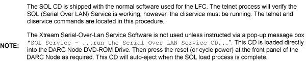

Operating Documentation
Direction 5224328-800, Rev# 5
Operating Documentation |
| All cable connector screw-locks must be finger-tightened, only. Do NOT use any tool to tighten cable screw-locks. | |
| Condition | Reference | Eff |
|---|---|---|
Understand the conventions used in this publication | - |

Select one of the following methods to Power OFF the Operator Console:
If Applications are up, click on the [Shut Down] button and select [Shutdown] .
| (For 06MW03.X Software) Wait 1-2 minutes after the “System halted” message appears, to allow the DARC Node to properly power-down. SW release 06MW29.7 has corrected this issue. | |
If Applications are down, open a Unix Shell. Type: halt.
Power OFF the console at the front panel switch.
Remove the front and rear Operator Console covers.
Visually verify proper labeling of each cable and disconnect all rear DARC Node cables. If necessary add a label for clarity.
| NOTE: | Refer to the schematic located on the rear console cover for cable connection details. |
| NOTE: | For a scalable PDF version of the GOC3 schematic diagram, click
on the following PDF icon: |
Remove and retain the four (4) front mounting screws and slide out the DARC Node.
Verify the replacement DARC Node is correct for the Site DAS Type.
Slide the replacement DARC Node into the Operator Console.
Replace the four (4) front mounting screws on the front of the DARC Node.
Verify the power switch located at the rear of the DARC Node is in the ON position.
| All cable connector screw-locks must be finger-tightened, only. Do NOT use any tool to tighten cable screw-locks. | |
Replace all rear cable connections to the DARC Node.
Power ON the Operator Console at the front switch.
At the DARC Node verify the front panel green LED labeled POWER is on. If not press the front panel power switch (far-left switch) to apply power (hold 3-10 seconds) to the DARC Node.
At the IG Node verify the front panel green LED labeled PWR is on. If not press the front panel power switch (hold 3-10 seconds) to apply power to the IG Node.
At the SDDA verify the front panel green LED labeled I/O is on. If not press the front panel power switch to apply power to the SDDA.
Stop Applications from auto-starting at the 5 second PINK Box.
The DARC Node must be UP, to load the OS (Operating System) and DARC Application software. Perform the telnet command on the DARC Node to verify communication, as follows:
At the Toolchest, with Application software down, open a Unix Shell.
Perform the telnet command to the DARC Node from the Host Computer:
Confirm the Host Computer Software type. Examples are shown, the software version output should match the Software media to be loaded.
Open a Unix Shell.
Type the following to verify software version information. Examples are provided. The examples are not actual output.
| NOTE: | Jarrell IG Nodes require software release 06MW29.7 or more recent |
{ctuser@hostname} swhwinfo << for Apps Version
{ctuser@hostname} swhwinfo -o << for OS version
The DARC Node must be loaded with the OS and Application software from the Host Computer to the DARC Node. Set up the DARC Node Boot Order BIOS (if applicable) to allow the software to load from the Host Computer. Perform the DARC Node OS (Operating System) load as described in the LFC (load From Cold) procedure for the software set being used. Perform the DARC Node Application software load as described in the LFC (Load From Cold) procedure for the software set being used. Return the DARC Node Boot Order BIOS (if applicable) to avoid problems with the DARC Node Motherboard bootup. Refer to the appropriate LFC procedure and follow the sub-sections after reading the DARC Subnet information outlined below:
| NOTE: | The OS (Operating System) and Application software version loaded onto the DARC Node must match the OS and Application software versions loaded on the Host Computer. |
Perform the DARC Node OS (Operating System) load as described in the LFC (Load From Cold) procedure for the software set being used.
Perform the DARC Node Application load as described in the LFC (Load From Cold) procedure for the software set being used.
Perform the DARC Node Boot Order BIOS (if applicable) as described in the LFC (Load From Cold) procedure for the software set being used.
With Application Software Down, the DARC Node must be checked to verify communication between the Host Computer and the DARC Node. Perform ping and rsh commands on the DARC Node, as follows:
| NOTE: | For a Ethernet cabling connection issues, use the ethtool command
(ethtool –p eth# where # represents
the Ethernet address) as root on the Host Computer, DARC Node or IG Node to
determine if the Ethernet cable is correctly connected. The port will blink
or flash when activated and <Ctrl+C> will stop the test.
This command must be performed as root. Open a Unix Shell and type the following
|
At the Toolchest, with Application software down, open a Unix Shell.
| NOTE: | If the DARC login prompt [root@darc] is not present, then the Application software load has not been successful. If the DARC login prompt [root@localhost root] is present, then reloading the DARC Node OS again per the procedure. If ping darc command fails perform an ifconfig on the Host and verify the DARC is RUNNING and the address is correct. Check the Ethernet cable. Re-power the Operator Console, after a halt, as required to troubleshoot. |
Ping the DARC Node:
Remote Shell to the DARC Node:
Verify the DARC Node DIP board type (see table, below).
Verify the DARC Node DAS Interface Processor Board (DIP) Diagnostics pass.
Remove the power for each IG Node, then re-power each IG Node with the DARC Node up and able to Remote Shell (rsh darc).
At each IG Node, verify the power is OFF. If power is On for any IG Node, then press the front panel power switch (hold 3-10 seconds) to remove power to each IG Node present in the Operator Console.
Wait 20 seconds.
At each IG Node, press the front panel power switch (hold 3-10 seconds) to apply power to the IG Node(s).
Wait 2 minutes for each IG Node present in the Operator Console to boot up.
The DARC Node must be up to check the IG Node(s). Perform ping and rsh commands on the DARC Node, as follows:
| NOTE: | For a Ethernet cabling connection issues, use the ethtool command
(ethtool –p eth# where # represents the Ethernet address) as root on the
Host Computer, DARC Node or IG Node to determine if the Ethernet cable is
correctly connected. The port will blink or flash when activated and Ctrl-C
will stop the test. This command must be performed as root.
|
At the Toolchest, with Application software down, if necessary, open a Unix Shell.
Ping IG Node #1:
Remote Shell to the IG Node #1:
Exit from the IG Node #1 Remote Shell:
Ping IG Node #2:
Remote Shell to the IG Node #2:
Exit from the IG Node #2 Remote Shell:
Ping IG Node #3:
Remote Shell to the IG Node #3:
Exit from the IG Node #3 Remote Shell:
Exit from the DARC Node Remote Shell:
In the following test, the Disk Array (SDDA) is configured with 2 disks. Visually verify the entire output is successful from the command script performed.
| NOTE: | This procedure is applicable only to 06MW03.x software or newer. For older versions of software, perform the following: |
| NOTE: | Application Software must be down. |
Type the following:
Verify the create partitions diagnostic passes and all output looks good.
Verify assemble diagnostic passes and all output looks good.
Verify query diagnostic passes and all output looks good.
In the following test, the Image Generator Node(s) RAC (Recon Accelerator Card) will be tested.
| NOTE: | Application Software must be down. |
{ctuser@hostname} racdiags
Verify rac diagnostic passes for each IG Node configured in the Operator Console.
As ctuser, type: st
The Reconstruction (not Scan) portion of the system can be tested at this point.
Verify the FSA Box is Idle (not Paused). If paused, click on Recon Management and Restart the Queue.
Click on the [RETRO RECON] selection on the left Monitor.
Click the [RAT GOLD] series.
Click [SELECT SERIES] .
Click on [CONFIRM] .
Verify the image(s) reconstruct and are displayed.
Click on [QUIT] .
Select the Service Icon.
Select [DIAGNOSTICS] .
Select [Recon Data Path] .
Select [1] and [ALL]
Select [RUN]
Verify Recon Data Path tests pass.
Select [Dismiss] .
After the DARC Node software load (OS and Apps), the Reconfig Info file must be re-saved on the System State DVD-RAM.
Insert the System State DVD-RAM into the SCSI Tower DVD RAM drive.
Wait until the DVD drive is ready (i.e., until the front panel green LED is no longer lit).
Select: Service icon to access the CSD (Common Service Desktop).
Select: [Utilities] .
Select: [System State] .
Select [Reconfig Info] .
Select [Save] .
If applicable, select [Yes] when the following message appears: System State Media Status: Please insert a DVD into the drive and press Save again.
When completed, select [CANCEL] .
| Do NOT select [DISMISS] more than once. Doing so will result in the GUI becoming hung, and the System State will be unusable. Should this occur, Re-Save the System State again. | |
When completed, select [Dismiss] .
Close the Service Desktop window at the upper left corner of the screen
Perform sanity scans (e.g., scout, axial and helical).
Verify the image(s) reconstruct and are displayed.
Install the front and rear Operator Console covers.